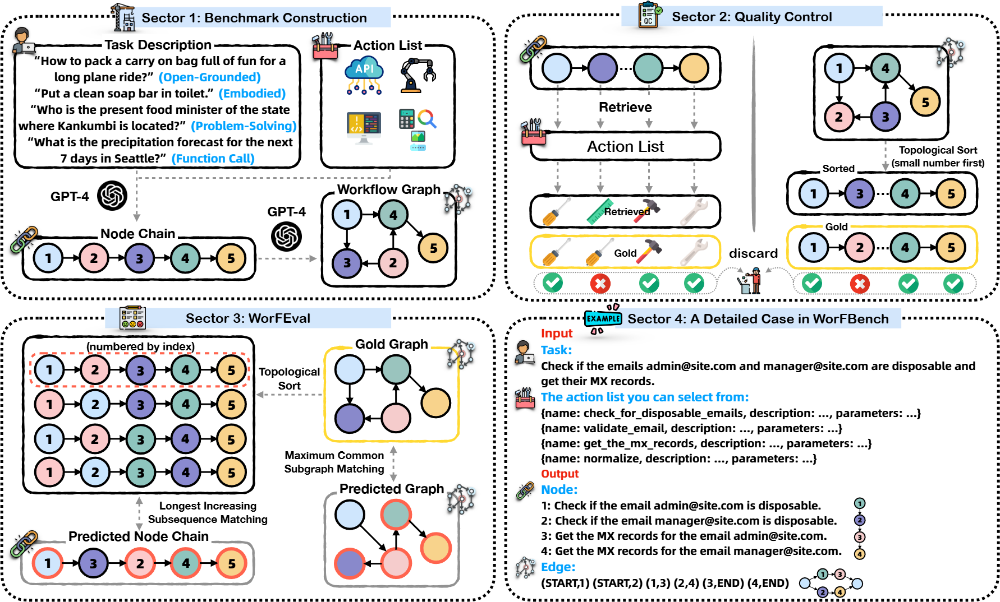
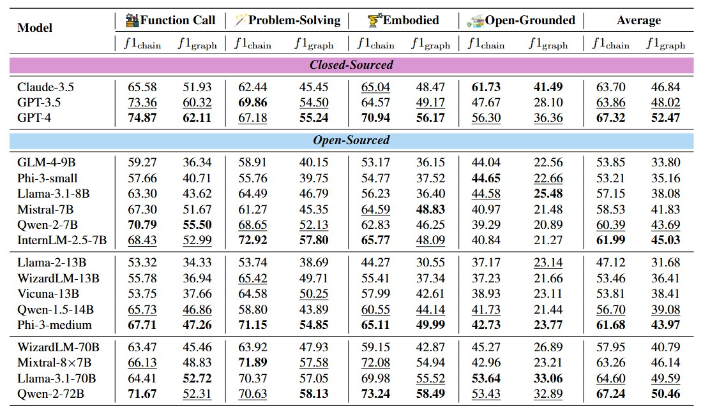
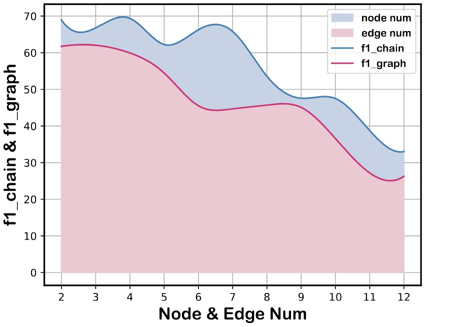
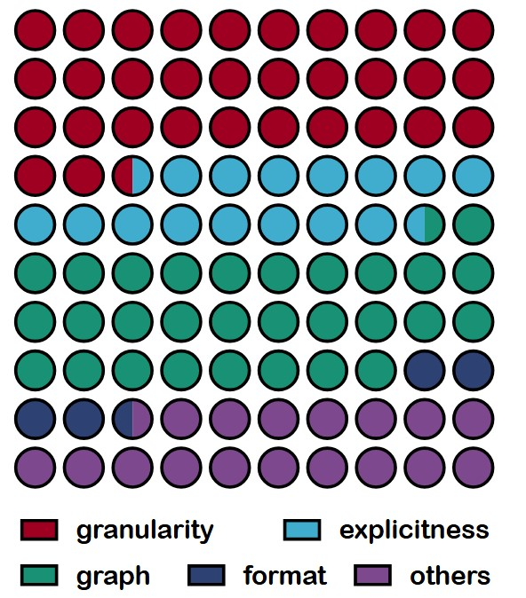

Abstract
Large Language Models (LLMs), with their exceptional ability to handle a wide range of tasks, have driven significant advancements in tackling reasoning and planning tasks, wherein decomposing complex problems into executable workflows is a crucial step in this process. Existing workflow evaluation frameworks either focus solely on holistic performance or suffer from limitations such as restricted scenario coverage, simplistic workflow structures, and lax evaluation standards. To this end, we introduce WORFBENCH, a unified workflow generation benchmark with multi-faceted scenarios and intricate graph workflow structures. Additionally, we present WORFEVAL, a systemic evaluation protocol utilizing subsequence and subgraph matching algorithms to accurately quantify the LLM agent's workflow generation capabilities. Through comprehensive evaluations across different types of LLMs, we discover distinct gaps between the sequence planning capabilities and graph planning capabilities of LLM agents, with even GPT-4 exhibiting a gap of around 15\%. We also train two open-source models and evaluate their generalization abilities on held-out tasks. Furthermore, we observe that the generated workflows can enhance downstream tasks, enabling them to achieve superior performance with less time during inference.
WorfBench
Figure 2: The overview framework of our WORFBENCH. Sector 1 is the benchmark construction where we first synthesize the node chain and then the workflow graph. Sector 2 is our data filtering process. Sector 3 describes the algorithms in WORFEVAL to evaluate the predicted workflow of LLM agents. Sector 4 is a detailed data point of our WORFBENCH. Note that each node in this figure is uniquely identified by its color. Numbers on the nodes represent their indexes in the gold chain. Nodes matched with gold chain or graph are circled by in Sector 3.
Main Results
Table 1: Main Results. We evaluate all the models with identical carefully designed instructions and two-shot examples. We categorize the models based on whether the models are open-source and their scales. The best results for each category are marked in bold, and the second-best results are marked with underline.
Analysis
Figure 3: Performance Distribution of GPT-4. The distribution of f1_chain for the number of nodes and the distribution of f1_graph for the number of edges.

Table 2: Generalization Results of fine-tuned (FT) models on held-out tasks compared to baselines.

Figure 4: Error Statistics.
The Role of Workflow for Agent Planning

Table 3: End-to-end Performance augmented by workflow as prior knowledge.

Figure 5: Relative Function Call Accuracy of workflow-augmented Qwen-2-7B (Qwen-2-7B+W) on StableToolBench compared with various baselines.

Figure 6: Average Task Execution Time of linear ToolLlama and parallel ToolLlama.

Table 4: Average Planning Steps.